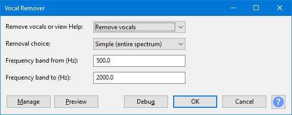

Vocal Remover
- See also the tutorial on Vocal Removal and Isolation
| This is now a "Legacy effect". The Vocal Reduction and Isolation effect has a Remove option Remove Center Classic (Mono) which is identical to removing the full frequency range using this effect. |
- Accessed by:
- 
Requirements
This plug-in can only remove vocals (or other audio) when the vocal is panned to center (that is, identical in both left and right channels). The lead vocal is sometimes recorded this way. When one channel is inverted and then both panned to center, any audio which is identical in both channels is canceled out, so becomes inaudible.
This means that if the audio you do not want to remove also happens to be center-panned, it will be canceled out along with the vocals. Kick drum and bass are examples of audio that is often center-panned and can thus disappear when vocals are removed. If the vocals differ in pitch (and thus in frequency) from other center-panned parts, removing only selected frequencies from the audio can solve such problems.
There is no guarantee vocals will be significantly attenuated by this plug-in. The vocals may be panned left and/or right or treated with stereo reverberation. It is possible to find plug-ins that can be run in Audacity that may be able to attenuate vocals by other than inversion. See the Wiki page Vocal Removal for details.
Remove vocals or view Help
- To run the effect, select Remove Vocals (the default).
- To View the built-in help screens, select View Help.
Removal choice
Vocal Remover has three choices of removal methods:
- Simple (entire spectrum)
- This inverts one channel in its entirety; if all the audio except the vocals is panned hard away from center, this will work the best. If some of the other audio is common to both channels, this choice may remove too much music, in which case one of the other options may work better.
- Remove frequency band
- This removes frequencies in a band whose upper and lower limit you specify in the Frequency band lower and upper limits... box retaining the others. Try this choice, entering the approximate frequency range of the vocals, if they are apparently at a very different pitch than the other audio (for example, a high female voice).
- Retain frequency band
- This removes only those frequencies lying outside the limit you specify in the Frequency band lower and upper limits... box retaining the others. This choice can help if there is audio of a particular frequency range (such as low drums or bass) which is lost when using the other methods. Enter the approximate frequency range of the audio you wish to retain.
Frequency band lower and upper limit (Hz)
| This control must contain two numbers, separated by one or more spaces (default: 500 2000). |
When using either the Remove frequency band or Retain frequency band option, the lower and upper limits of the frequency band in Hz are defined by this control. The two defining frequencies must be typed as numbers with no additional text. Neither frequency should exceed half of the track sample rate (as indicated in the Track Control Panel).
As a rough guide, the range of the human voice is approximately 150 to 7000 Hz, though the strongest components are usually in a narrower range of approximately 300 to 3000 Hz.
Buttons
Clicking on the command buttons give the following results:
- gives a dropdown menu enabling you to manage presets for the tool and to see some detail about the tool. For details see Manage presets
- plays a short preview of what the audio would sound like if the effect is applied with the current settings, without making actual changes to the audio. The length of preview is determined by your setting in , the default setting is 6 seconds.
- applies the effect to the selected audio with the current effect settings, but unlike the effect runs in debug mode. This is primarily of use when writing or editing Nyquist plug-ins.
- In addition to the normal plug-in behavior, a "debug window" opens to display error messages, normally the debug window will be empty
- applies the effect to the selected audio with the current effect settings and closes the dialog
- aborts the effect and leaves the audio unchanged, closing the dialog
 brings you to the appropriate page in the Manual, this page
brings you to the appropriate page in the Manual, this page